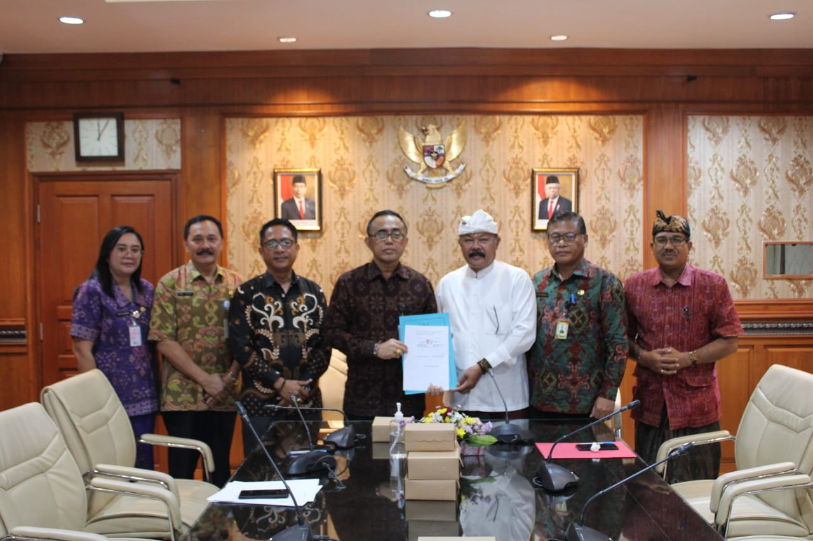
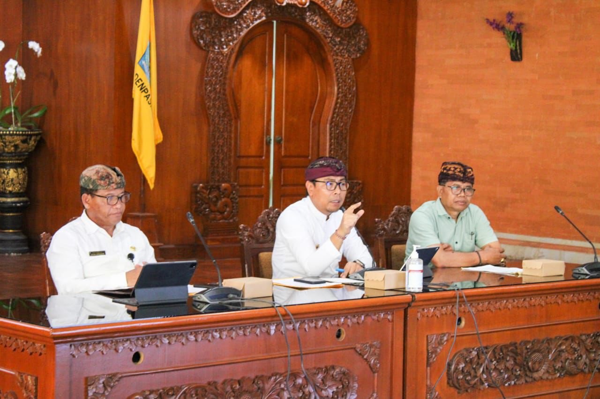
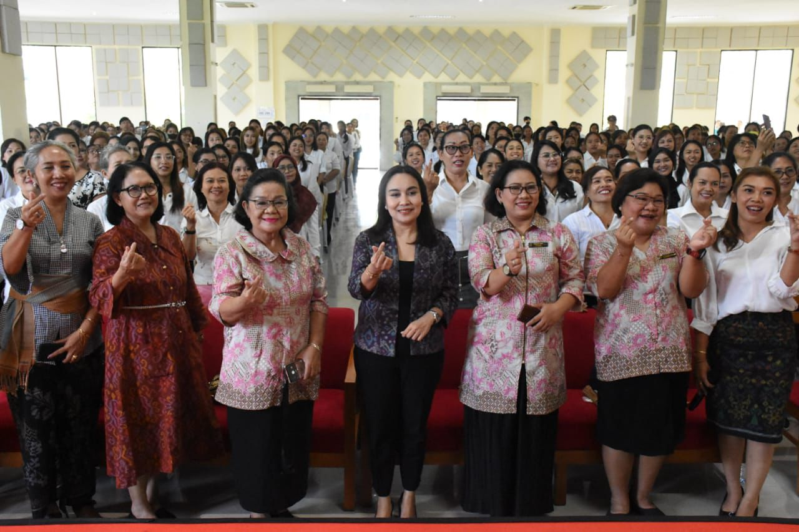
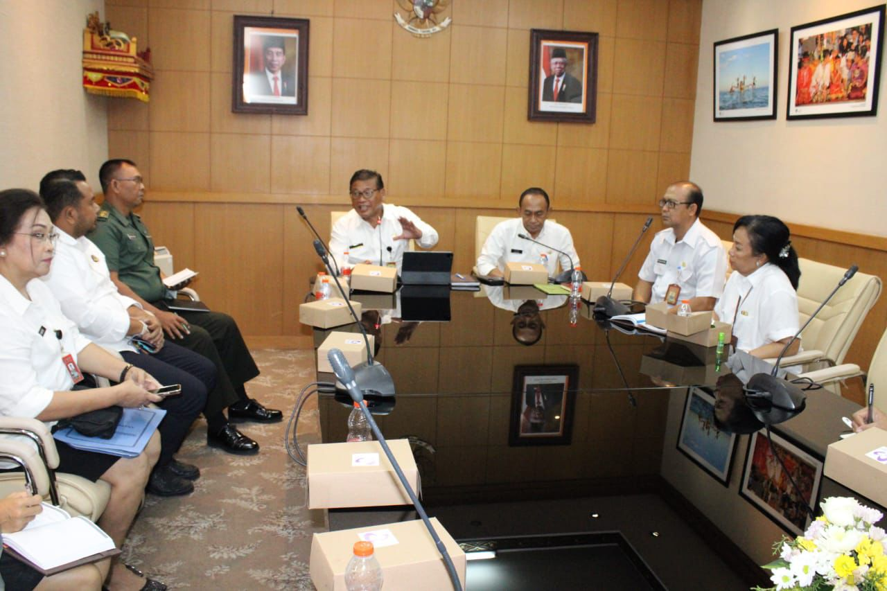
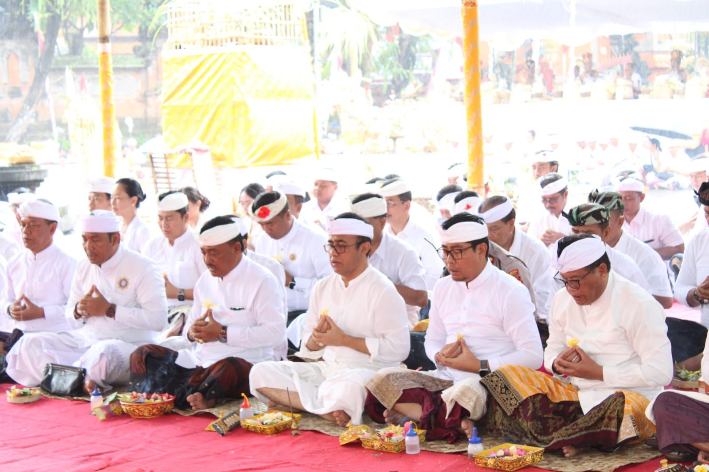

Pemkot Denpasar Bangun Sinergi Dengan Desa Adat Panjer, Hibahkan Lahan Dukung Pembangunan Pendidikan.
Walikota Denpasar, I Gusti Ngurah Jaya Negara bersama Bendesa Adat Panjer, AA Ketut Oka Adnyana menandatangani Perjanjian dan Serah Terima Lahan yang saat ini dimanfaatkan untuk SDN 1 Panjer di Kantor Walikota Denpasar, Jumat (23/2). Penandatanganan tersebut merupakan wujud nyata komitmen kedua belah pihak dalam mendukung kemajuan pendidikan di Kota Denpasar, khususnya wilayah Panjer.
Turut hadir dalam kesempatan tersebut Sekda Kota Denpasar, Ida Bagus Alit Wiradana, Asisten Administrasi Umum Setda Kota Denpasar, I Dewa Nyoman Semadi, Kepala BPKAD Kota Denpasar, Ni Putu Kusumawati, Sabha Desa Adat Panjer, Prof. I Nyoman Budiana, Camat Denpasar Selatan, I Made Sumarsana, Lurah Panjer, Putu Budi Ari Wibawa serta instansi terkait lainya.

Didukung PHDI, MDA, FKUB, Sabha Upadesa Hingga Pasikian Yowana, Pemkot Denpasar Jajaki Ranperda Pelestarian Ogoh-Ogoh.
Pemerintah Kota Denpasar mulai menjajaki pembentukan Rancangan Peraturan Daerah (Ranperda) tentang Pelestarian ogoh-ogoh di Kota Denpasar. Hal ini merupakan lanjutan dari penerapan Peraturan Walikota (Perwali) Nomor 29 Tahun 2020 tentang Pelestarian Ogoh-Ogoh. Demikian terungkap saat pelaksanaan Rapat Evaluasi Pelaksanaan Rangkaian Hari Suci Nyepi Icaka Warsa 1946 Tahun 2024 di Ruang Praja Utama Kantor Walikota Denpasar, Kamis (14/3).
Ketua MDA Kota Denpasar, AA Ketut Sudiana dalam kesempatan tersebut mejelaskan, secara umum, pelaksanaan Rangkaian Hari Suci Nyepi Icaka Warsa 1946 Tahun 2024 di Kota Denpasar telah berjalan lancar dan aman. Namun demikian, terdapat beberapa hal yang menjadi catatan dan harus ditindaklanjuti secara serius.

Ny. Ayu Kristi Arya Wibawa Buka Bimtek dan Uji Kompetensi Bagi MUA Pengantin Level III
Ketua Gabungan Organisasi Wanita (GOW) Kota Denpasar, Ny. Ayu Kristi Arya Wibawa, membuka secara resmi acara Bimtek dan Uji Kompetensi Penata Rias Wajah Pengantin/Make Up Artist (MUA) Level III, di Gedung Bali Creative Industri, pada Jumat (15/3). Program Bimtek dan Uji Kompetensi ini sendiri diselenggarakan oleh Lembaga Khusus dan Pelatihan (LKP) Agung Bali bekerja sama dengan Kementerian Perindustrian Republik Indonesia. Sejumlah anggota TP PKK Desa /Kelurahan dan juga organisasi wanita di Kota Denpasar turut hadir dalam acara ini. Keikutsertaan para peserta ini, adalah bentuk dukungan dari Pemerintah Kota Denpasar terhadap kegiatan tersebut.
Usai membuka kegiatan ini, Ketua GOW Kota Denpasar, Ayu Kristi Arya Wibawa menyampaikan apresiasinya, serta menyebut pentingnya sertifikasi dalam meningkatkan pengakuan para MUA di dunia industri.

Pemkot Denpasar Terus Galakkan Beragam Inovasi Jaga Stabilitas Inflasi Berkelanjutan
Pemerintah Kota Denpasar melalui Tim Pengendalian Inflasi Daerah (TPID) secara berkelanjutan terus berupaya menjaga stabilitas inflasi. Berbagai inovasi terus digalakkan, dari pasar murah, operasi pasar, peninjauan harga bahan pokok hingga pemantauan stok bahan pokok yang setiap saat dilaksanakan. Demikian disampaikan Sekda Kota Denpasar, Ida Bagus Alit Wiradana di Ruang Rapat Kantor Walikota Denpasar, pada Rabu (13/3).
Tampak mendampingi dalam kesempatan tersebut Asisten Perekonomian dan Pembangunan Setda Kota Denpasar AA Gde Risnawan, Staf Ahli Bidang Perekonomian dan Pembangunan Kota Denpasar I Gusti Ayu Ngurah Raini, Inspektur Kota Denpasar Ir. Putu Naning Djayaningsih, M.Si, Kepala Bagian Perekonomian Setda Kota Denpasar I Wayan Putra Sarjana, serta sejumlah pejabat terkait, termasuk TPID Kota Denpasar, BPS, dan perwakilan Forkopimda Kota Denpasar.

Rangkaian Nyepi, Pemkot Denpasar Gelar Tawur Agung Tilem Kesanga di Kawasan Catus Pata Patung Catur Muka.
Prosesi Tawur Agung Kesanga serangkaian Hari Suci Nyepi Caka 1946 di Kota Denpasar berlangsung bertepatan dengan Tilem Sasih Kesanga, di Kawasan Catus Pata Catur Muka Denpasar, Minggu (10/3). Diringi suara Gambelan, Kekidungan, hingga Rejang Renteng dan Topeng Wali, upacara Tawur Agung ini berlangsung khidmat yang dipuput 6 sulinggih Sarwa Sadhaka.
Tak sedikit umat Hindu Kota Denpasar dan perwakilan Desa Adat se Kota Denpasar yang mengikuti rangkaian Tawur hingga selesai. Hadir langsung ditengah masyarakat, Walikota Denpasar, I Gusti Ngurah Jaya Negara, Wakil Walikota Denpasar, I Kadek Agus Arya Wibawa, Ketua DPRD Kota Denpasar, I Gusti Ngurah Gede, Forkopimda Kota Denpasar dan Sekda Kota Denpasar, IB Alit Wiradana.